Meu nome é Diego, tenho 34 anos, sou natural de Jaú-SP, moro no Vale do Paraíba desde 2014, atualmente em Taubaté. Vim para cá com o desejo de oportunidades melhores para minha vida. Atualmente sou profissional da área de saúde, atuo como Técnico de enfermagem do trabalho em uma empresa que fabrica equipamentos para extração de petróleo. Sou casado, tenho um filho de 11 anos, e uma filha de 7 anos.
Sou estudante de Análise e Desenvolvimento de Sistemas, curso que comecei com a intenção de migrar para a área de tecnologia, e buscar um trabalho onde eu possa ter mais flexibilidade de horário e controle sobre minha vida profissional.
Meu time do coração é Palmeiras, time que desde de criança aprendi a acompanhar e torcer nos bons e mals momentos.
Meu hobby é ler mangás, e posteriormente acompanhar os animes dos que eu mais gostar. Algumas obras que acompanho atualmente são: "One Piece", "One Punch-Man", "Sakamoto Days", "Kagurabachi", "Dandadan", "Bluelock", "Gachiakuta", "Record of Ragnarok", "Chainsaw Man".
Também gosto de andar de moto, fazer trilhas (quando possível), curtir uma praia (maior parte do tempo dentro do mar, a não ser que esteja muito gelada), ir pescar, e curtir momentos com minha família.
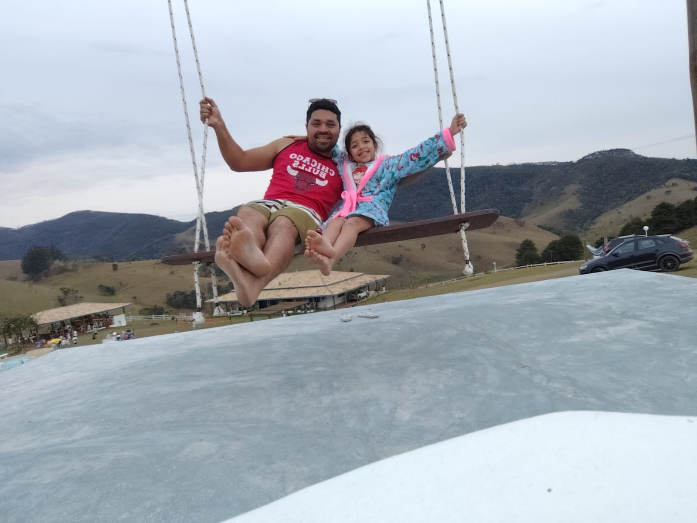
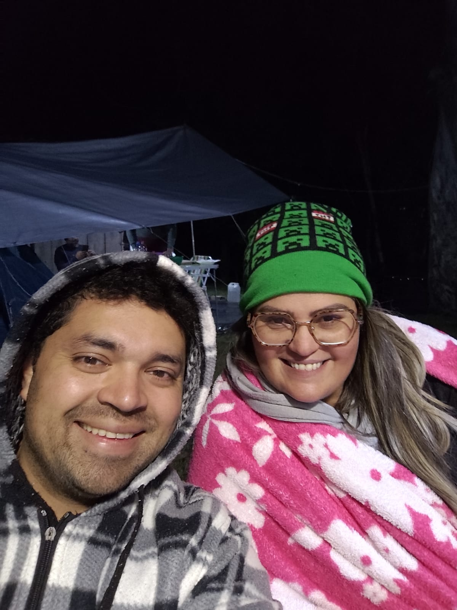
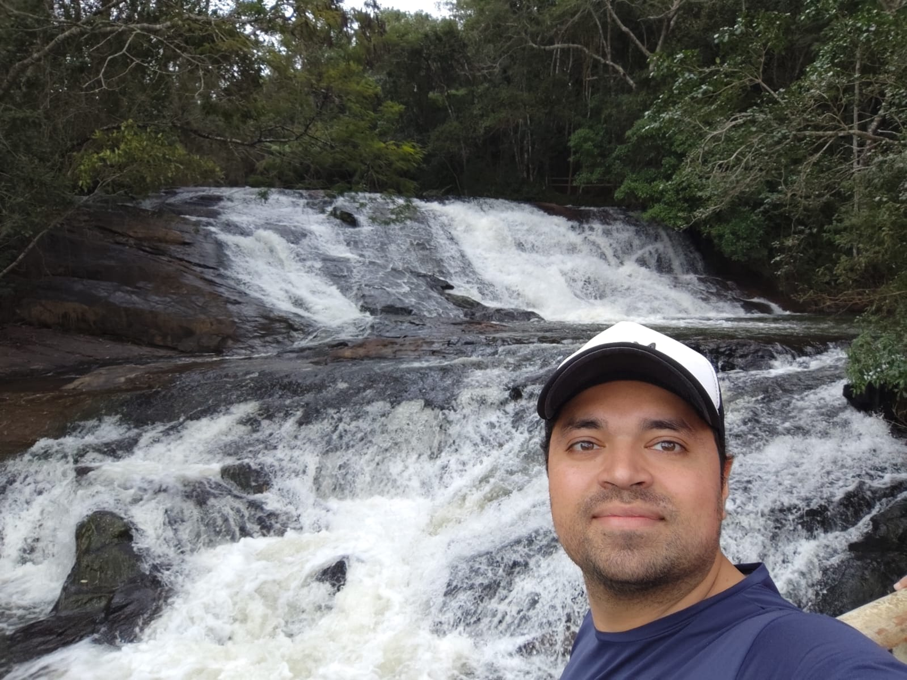
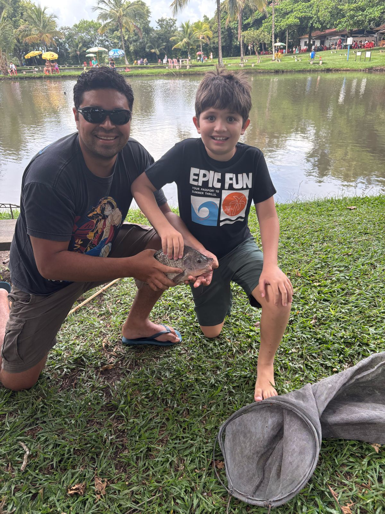
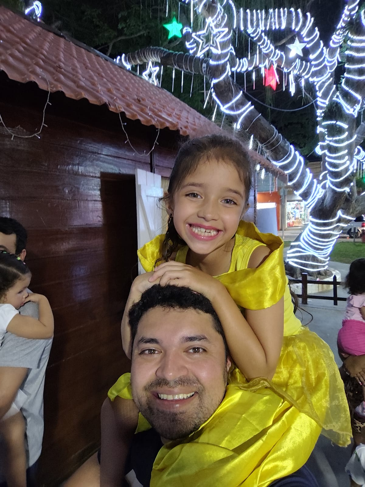
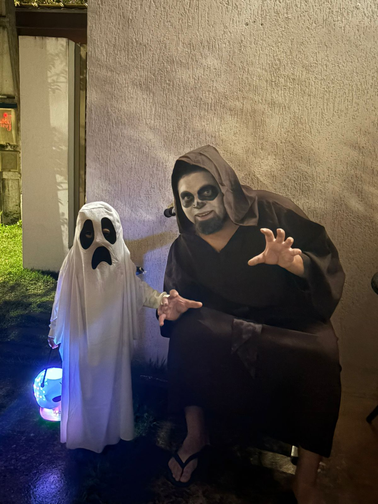
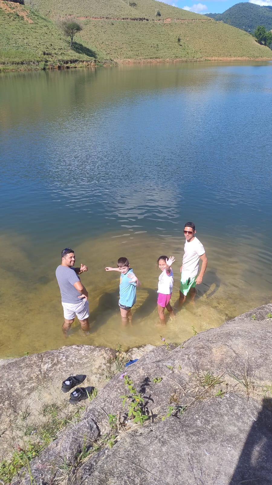
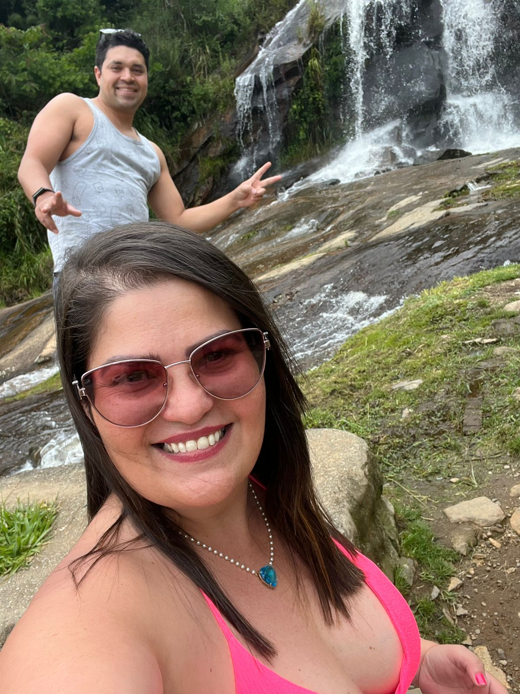
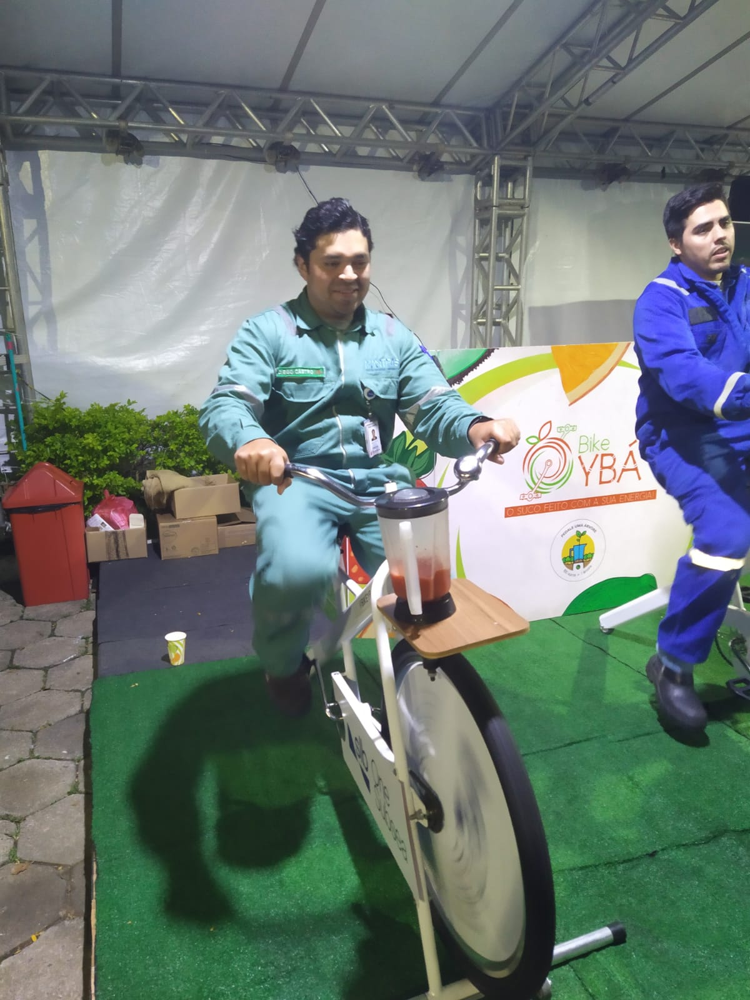
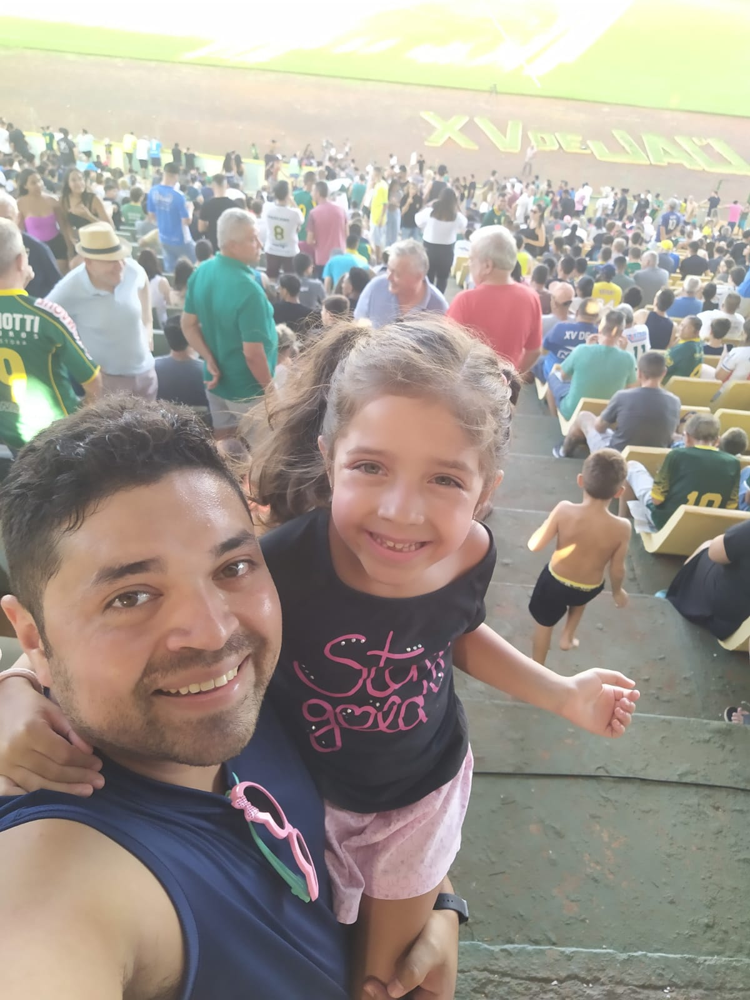
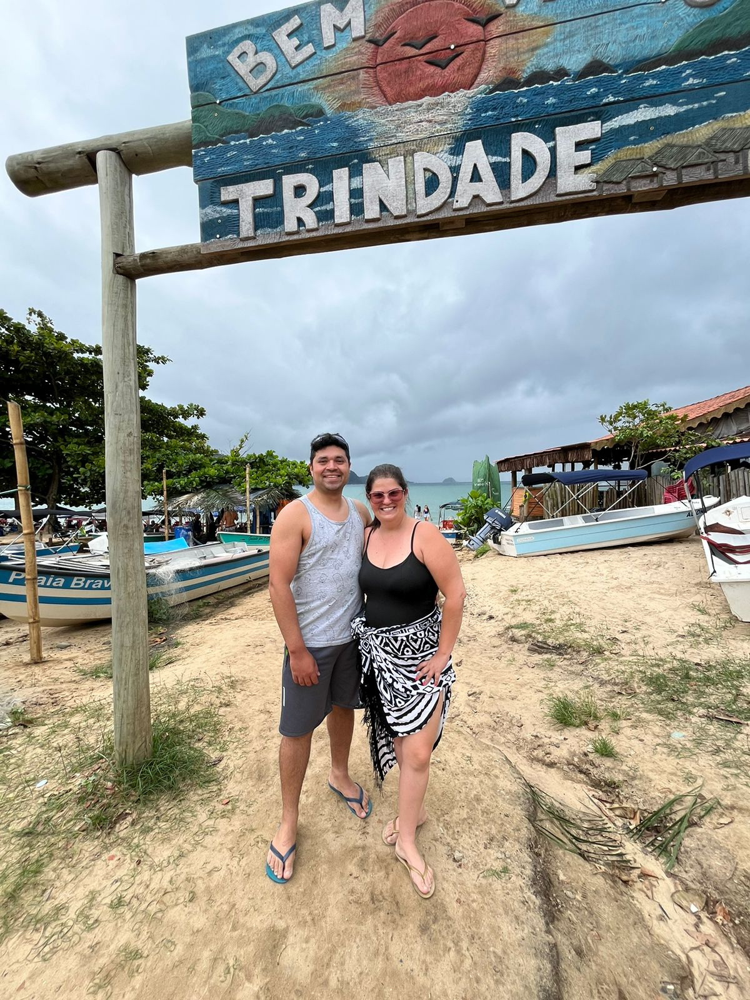
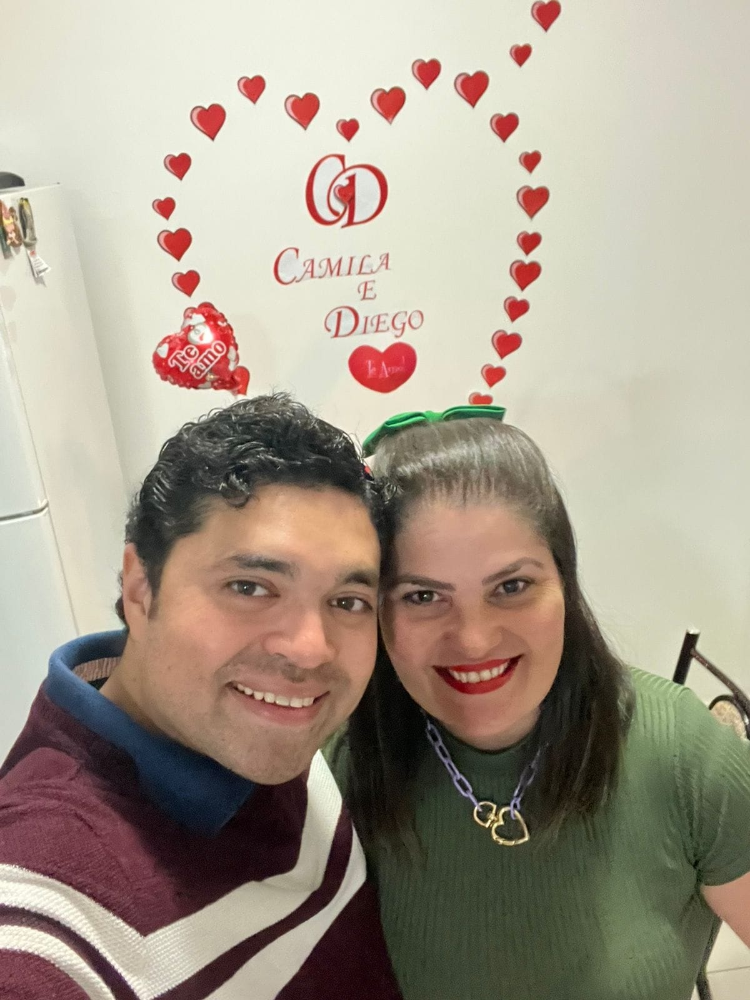
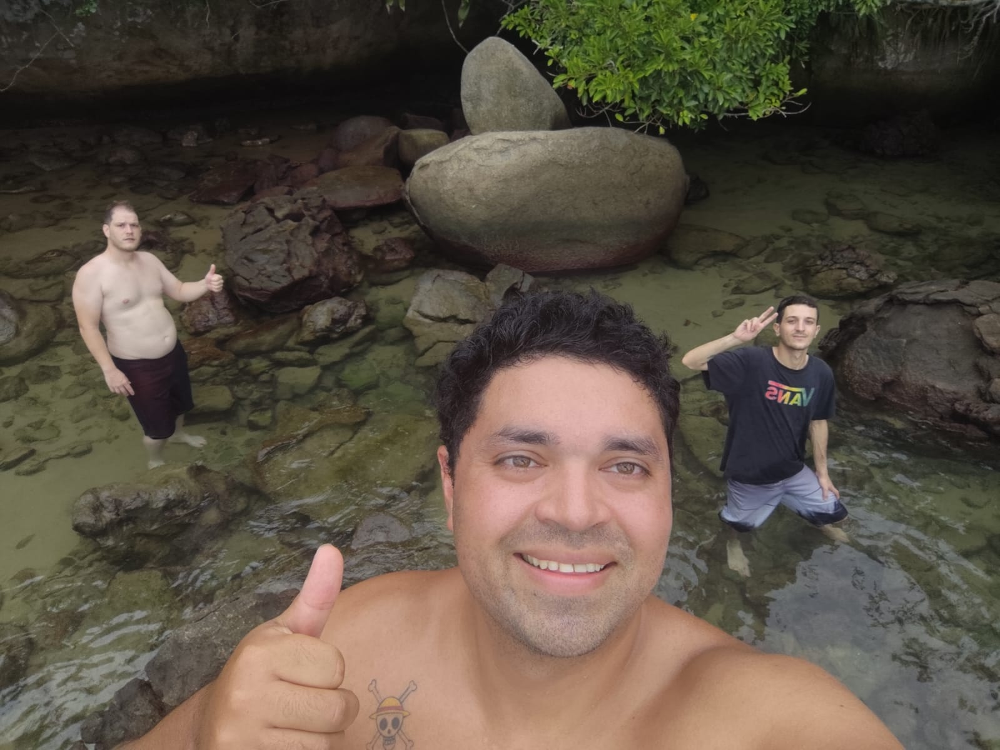